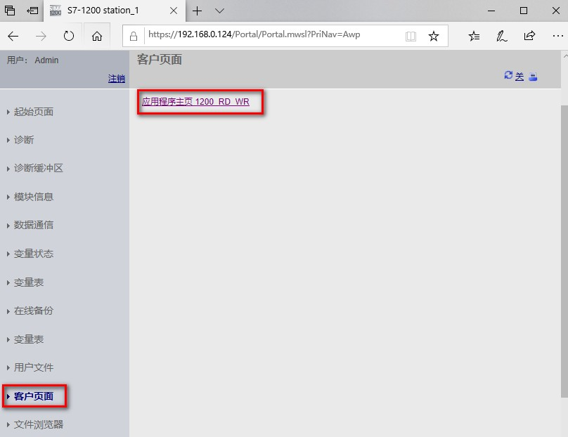
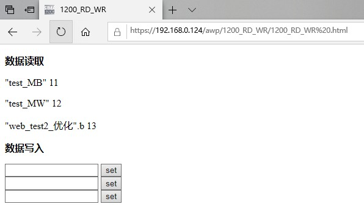

用户可以通过访问标准 Web 页面访问用户定义 Web 页面。 标准 Web 页面的左侧菜单中有"用户页面"(User Pages) 链接，单击"用户页面"(User Pages) 链接后，Web 浏览器将转到默认页面的链接页面，如图 1 所示。
在用户定义的页面中，导航视特定页面的设计情况而定。

图 1. Web Server 访问自定义页面
IE 浏览器访问用户自定义页面后可以从数据写入处修改新值并且点击 set 确认，修改后的数值可以从数据读取处显示，如图 2 所示。

图 2. IE 浏览器访问自定义页面